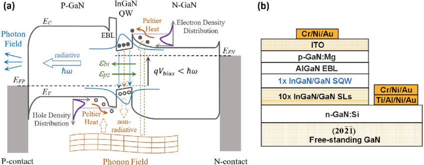
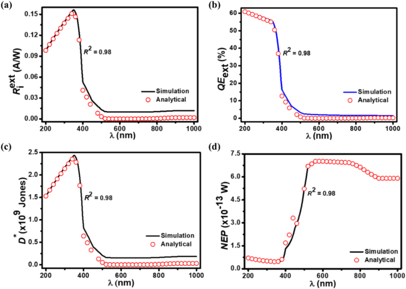

Research
I am an undergraduate researcher interested in how semiconductor materials, interfaces, and device structures translate into measurable electrical/optical behavior. My work includes TCAD simulation workflows (Synopsys Sentaurus SDE/SDEVICE), post-processing with Sentaurus Visual, analysis with Python, and Lab-based data visualization using LabVIEW.
Tools: Sentaurus · Sentaurus Visual · Python · LabVIEW
Multi-Quantum Well (MQW) TCAD Setup
Sentaurus SDE + Sentaurus Device
Optional image: assets/img/mqw.jpg
- Built layered well/barrier geometries using Sentaurus SDE.
- Enabled HeteroInterface / QuantumWell models in SDEVICE.
- Analyzed band edges, carrier density, and electric-field trends across interfaces.
Photodetector Simulation (Optics + EQE)
OpticalGeneration · RayTraceBC · Post-processing
Optional image: assets/img/eqe.jpg
- Configured OpticalGeneration and wavelength sweeps in Sentaurus Device.
- Applied RayTraceBC boundary conditions for reflectance/absorption effects.
- Used Sentaurus Visual to compute/visualize QE and responsivity trends.
Bandgap / Model Parameter Studies (I–V)
Device physics exploration + I–V analysis

Optional image: assets/img/bandgap.jpg
- Configured bandgap and recombination-related parameters in Sentaurus Device.
- Solved Poisson + carrier transport for steady-state device response.
- Generated and analyzed I–V curves in Sentaurus Visual.
Visualization & LabVIEW
Clear plots + reproducible analysis
- Extracted cutlines/band diagrams and key device variables using Sentaurus Visual.
- Processed exported data with Python (Pandas/Matplotlib) for clean plots.
- Used LabVIEW for data visualization/analysis workflows supporting interpretation of datasets.
Undergrad-friendly focus: learn → simulate → analyze → communicate